In this document we discuss the finite-element-based solution of the Helmholtz equation, an elliptic PDE that describes time-harmonic wave propagation problems. We start by reviewing the relevant theory and then present the solution of a simple model problem – the scattering of a planar wave from a circular cylinder.
Theory: The Helmholtz equation for time-harmonic scattering problems
The Helmholtz equation governs time-harmonic solutions of problems governed by the linear wave equation
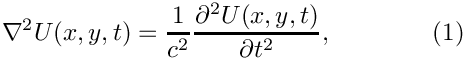
where 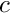 is the wavespeed. Assuming that  is time-harmonic, with frequency
is time-harmonic, with frequency  , we write the real function as
, we write the real function as
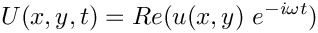
where 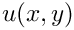 is complex-valued. This transforms (1) into the Helmholtz equation
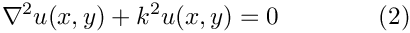
where
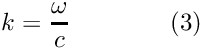
is the wave number. Like other elliptic PDEs the Helmholtz equation admits Dirichlet, Neumann (flux) and Robin boundary conditions.
If the equation is solved in an infinite domain (e.g. in scattering problems) the solution must satisfy the so-called Sommerfeld radiation condition which in 2D has the form
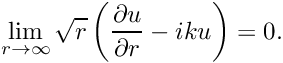
Mathematically, this conditions is required to ensure the uniqueness of the solution (and hence the well-posedness of the problem). In a physical context, such as a scattering problem, the condition ensures that scattering of an incoming wave only produces outgoing not incoming waves from infinity.
Discretisation by finite elements
The discretisation of the Helmholtz equation itself only requires a trivial modification of oomph-lib's Poisson elements – we simply add the term 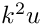 to the residual. Since most practical applications of the Helmholtz equation involve complex-valued solutions, we provide separate storage for the real and imaginary parts of the solution – each Node therefore stores two unknowns values. By default, the real and imaginary parts are stored as values 0 and 1, respectively; see the section The enumeration of the unknowns for details.
The application of Dirichlet and Neumann boundary conditions is straightforward and follows the pattern employed for the solution of the Poisson equation:
- Dirichlet conditions are imposed by pinning the relevant nodal values and setting them to the appropriate prescribed values.
- Neumann (flux) boundary conditions are imposed via
FaceElements(here theHelmholtzFluxElements). As usual we attach these to the faces of the "bulk" elements that are subject to the Neumann boundary conditions.
The imposition of the Sommerfeld radiation condition for problems in infinite domains is slightly more complicated. In the following discussion we will restrict ourselves to two dimensions and assume that the infinite domain is truncated at a circular artificial boundary  of radius 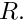 [This assumption is also made in the implementation of
of radius 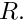 [This assumption is also made in the implementation of oomph-lib's FaceElements that allow the (approximate) imposition of the Sommerfeld radiation condition. The methodology can easily be modified to deal with other geometries but this has not been done yet – any volunteers?] All methods exploit the fact that the relevant solution of the Helmholtz equation can be written in polar coordinates as
![\[ u(r,\varphi) = \sum_{n=-\infty}^{+\infty} A_n \ H_n^{(1)}(kr) \ e^{i n \varphi}, \ \ \ \ \ \ \ (4) \]](form_12.png)
where the 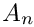 are suitable coefficients and 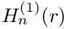 is the  -th-order Hankel function of the first kind.
-th-order Hankel function of the first kind.
Approximate/absorbing boundary conditions (ABCs)
It is possible to derive approximate versions of the Sommerfeld radiation condition in which the normal derivative of the solution on the artificial boundary is related to its value and possibly its tangential derivatives. Such boundary conditions (sometimes referred to as approximate or absorbing boundary conditions – ABCs) are typically derived from asymptotic expansions of the solution at large distances from the origin and become more accurate the larger the radius  of the artificial boundary is. Higher accuracy can therefore only be achieved by increasing the size of the computational domain, with an associated increase in computational cost.
of the artificial boundary is. Higher accuracy can therefore only be achieved by increasing the size of the computational domain, with an associated increase in computational cost.
oomph-lib provides an implementation of the following three boundary conditions (all taken from J. J. Shirron & I. Babuska's paper "A comparison of approximate boundary conditions and infinite element methods for exterior Helmholtz problems", Computer Methods in Applied Mechanics and Engineering 164 121-139 (1998), in which the authors compare the accuracy of these and many other approximate boundary conditions).
- Feng's first order ABC:
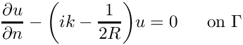
(This is identical to the first-order Bayliss and Turkel boundary condition). - Feng's second order ABC:
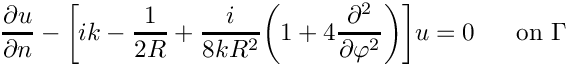
- Feng's third order ABC:
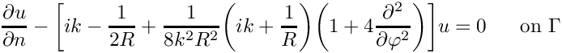
All three boundary conditions are implemented in the class HelmholtzAbsorbingBCElement. The order of the approximation can be set via the member function HelmholtzAbsorbingBCElement::abc_order(). All three boundary conditions are local (relating the function to its normal derivative) and do therefore not change the sparsity of the resulting finite element equations.
The Dirichlet-to-Neumann mapping (DtN)
Using (4), it is easy to show (see, e.g., J. Jin "The Finite Element Method in Electromagnetics (second
edition)", Wiley (2002) p. 501ff – but note that Jin assumes that the potential varies like 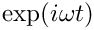 rather than  as assumed here) that the normal (radial) derivative, 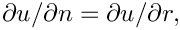 on the artificial boundary
as assumed here) that the normal (radial) derivative, 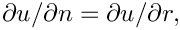 on the artificial boundary
is given by
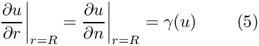
where
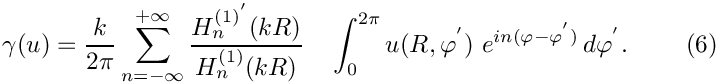
Equation (5) again provides a condition on the normal derivative of the solution along the artificial boundary and is implemented in the HelmholtzDtNBoundaryElement class. Since  depends on the solution everywhere along the artificial boundary (see (6)), the application of the boundary condition (5) introduces a non-local coupling between all the degrees of freedom located on that boundary. This is handled by classifying the unknowns that affect but are not associated with the element's own nodes as external
depends on the solution everywhere along the artificial boundary (see (6)), the application of the boundary condition (5) introduces a non-local coupling between all the degrees of freedom located on that boundary. This is handled by classifying the unknowns that affect but are not associated with the element's own nodes as external Data.
To facilitate the setup of the interaction between the HelmholtzDtNBoundaryElements, oomph-lib provides the class HelmholtzDtNMesh which provides storage for (the pointers to) the HelmholtzDtNBoundaryElements that discretise the artificial boundary. The member function HelmholtzDtNMesh::setup_gamma() pre-computes the values required for the imposition of equation (5). The radius of the artificial boundary and the (finite) number of (Fourier) terms used in the sum in (6) are specified as arguments to the constructor of the HelmholtzDtNMesh.
NOTE: Since depends on the solution, it must be recomputed whenever the unknowns are updated during the Newton iteration. This is best done by adding a call to HelmholtzDtNMesh::setup_gamma() to Problem::actions_before_newton_convergence_check(). [If Helmholtz's equation is solved in isolation (or within a coupled, but linear problem), Newton's method will converge in one iteration. In such cases the unnecessary recomputation of after the one-and-only Newton iteration can be suppressed by setting Problem::Problem_is_nonlinear to false.]
A specific example: Scattering of an acoustic wave from a sound-hard obstacle
We will now demonstrate the methodology for a specific example: the scattering of sound waves in an acoustic medium of density  and bulk modulus
and bulk modulus  . Assuming that an incoming sound wave impacts a rigid, impermeable obstacle as shown in this sketch,
. Assuming that an incoming sound wave impacts a rigid, impermeable obstacle as shown in this sketch,

we wish to find the wave field that is scattered from the body.
For this purpose we denote the time-dependent displacement of the fluid particle in the acoustic medium by 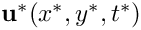 and introduce a displacement potential 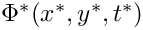 such that
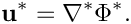
(As usual we employ asterisks to distinguish dimensional quantities from their non-dimensional equivalents, to be introduced below.) It is easy to show that  satisfies the linear wave equation (1) with wave speed 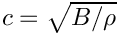.
satisfies the linear wave equation (1) with wave speed 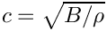.
Since the surface 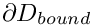 of the scatterer is impenetrable, the normal displacement of the fluid has to vanish on and the boundary condition for the displacement potential becomes
![\[ \left. \frac{\partial \Phi^*}{\partial n^*}\right|_{\partial D_{bound}} = 0. \ \ \ \ \ \ \ \ \ \ \ \ \ (7) \]](form_34.png)
We non-dimensionalise all lengths and displacements on some problem-dependent lengthscale  (e.g. the radius of the scatterer), non-dimensionalise the potential as 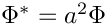 and scale time on the period of the oscillation,
(e.g. the radius of the scatterer), non-dimensionalise the potential as 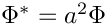 and scale time on the period of the oscillation,  The governing equation then becomes
The governing equation then becomes
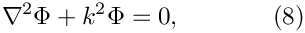
where the square of the wavenumber is given by
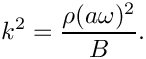
Assuming that the incoming wave (already satisfying (8)) is described by a (known) non-dimensional displacement potential of the form
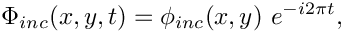
we write the total potential as
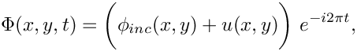
where 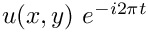 represents the displacement potential associated with the scattered field which must satisfy (2). The boundary condition (7) then becomes a Neumann (flux) boundary condition for the scattered field,
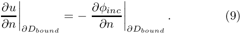
For the special case of the incoming wave being a planar wave, propagating along the x-axis, the incoming field can be written in polar coordinates as
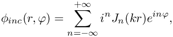
where 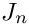 is the Bessel function of the first kind of order . The exact solution for the scattering of such a wave from a circular disk is given by the series
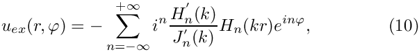
where we have chosen the disk's radius,  , as the lengthscale by setting 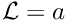. In the above expression, 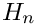 denotes the Hankel function of the first kind of order and the prime denotes differentiation with respect to the function's argument.
, as the lengthscale by setting 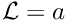. In the above expression, 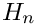 denotes the Hankel function of the first kind of order and the prime denotes differentiation with respect to the function's argument.
A quantity that is of particular interest in wave propagation problems is the time-average of the power radiated by the scatterer,
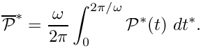
In the context of an acoustic wave, the total instantaneous power, 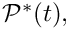 radiated over a closed boundary is
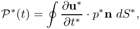
where the pressure is related to the displacement potential via
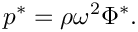
The non-dimensional time-averaged radiated power can be expressed in terms of the complex potential  as
as
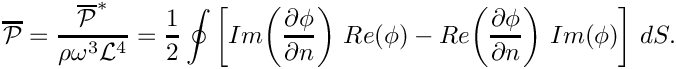
Results
The figure below shows an animation of the displacement potential 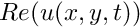 for scattering from a circular disk for a non-dimensional wavenumber of  over one period of the oscillation. The simulation was performed in an annular computational domain, bounded by the outer surface the (unit) disk and an artificial outer boundary of non-dimensional radius 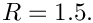 The Sommerfeld radiation condition was imposed using the DtN mapping and the simulation was performed with spatial adaptivity (note the non-uniform refinement).
over one period of the oscillation. The simulation was performed in an annular computational domain, bounded by the outer surface the (unit) disk and an artificial outer boundary of non-dimensional radius 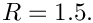 The Sommerfeld radiation condition was imposed using the DtN mapping and the simulation was performed with spatial adaptivity (note the non-uniform refinement).
The "carpet plot" compares the exact (green) and computed (red) solutions for the displacement potential. The colours in the contour plot at the bottom of the figure provide an alternative visualisation of the magnitude of the scattered field.

The numerical solution
The global namespace
As usual, we define the problem parameters in a global namespace. The main physical parameter is the (square of the) wave number, 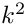. N_fourier is the number of (Fourier) terms to be used in evaluation of the series in equations (6) and (10). The remaining parameters determine how the Sommerfeld radiation condition is applied.
The function get_exact_u returns the exact solution for the scattering problem. We will use this function for the validation of our results.
Next we provide a function that computes the prescribed flux (normal derivative) of the solution, 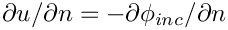, evaluated on the surface of the unit disk.
The driver code
The driver code is very straightforward. We parse the command line to determine which boundary condition to use and set the flags in the global namespace accordingly.
Next we build the problem, either with or without enabling spatial adaptivity and define the output directory.
Finally, we solve the problem and document the results.
The problem class
The problem class is very similar to that employed for the adaptive solution of the 2D Poisson equation with flux boundary conditions. The only difference is that we provide two separate meshes of FaceElements: one for the inner boundary where the HelmholtzFluxElements apply the Neumann condition (9), and one for the outer boundary where we apply the (approximate) Sommerfeld radiation condition. As discussed in section The Dirichlet-to-Neumann mapping (DtN) , we use the function actions_before_newton_convergence_check() to recompute the integral whenever the unknowns are updated during the Newton iteration.
The problem constructor
We start by building the bulk mesh, using the refineable or non-refineable version of the TwoDAnnularMesh, depending on the macro ADAPTIVE. (The error tolerances for the adaptive version are chosen such that the mesh is refined non-uniformly – with the default tolerances, oomph-lib's automatic mesh adaptation procedure refine the mesh uniformly.)
Next we create the two (empty) meshes for the FaceElements,
and populate them using the functions create_flux_elements(...) and create_outer_bc_elements(...).
We add the various (sub-)meshes to the problem and build the global mesh
Finally, we complete the build of the various elements by by passing pointers to the relevant quantities to them, and assign the equation numbers.
The problem is now ready to be solved.
Actions before adapt
The mesh adaptation is driven by the error estimates for the bulk elements. The various FaceElements must therefore be removed from the global mesh before the adaptation takes place. We do this by calling the function delete_flux_elements(...) for the two face meshes, before rebuilding the Problem's global mesh.
Actions after adapt
After the (bulk-)mesh has been adapted, the flux elements must be re-attached. This is done by calling the functions create_flux_elements(...) and create_outer_bc_elements, followed by rebuilding the Problem's global mesh. Finally, we complete the build of the FaceElements by calling the functions setup_outer_boundary() and set_prescribed_incoming_flux_pt().
Delete flux elements
The helper function delete_face_elements() is used to delete all FaceElements in a given surface mesh before the mesh adaptation.
Creating the face elements
The functions create_flux_elements(...) and create_outer_bc_elements(...) create the FaceElements required to apply the boundary conditions on the inner and outer boundaries of the annular computational domain. They both loop over the bulk elements that are adjacent to the appropriate mesh boundary and attach the required FaceElements to their faces. The newly created FaceElements are then added to the appropriate mesh.
(We omit the listing of the function create_flux_elements(...) because it is very similar. Feel free to inspect in the source code.)
Post-processing
The post-processing function doc_solution(...) computes and outputs the total radiated power, and plots the computed and exact solutions (real and complex parts).
Finally, we create the data required to produce an animation of the actual (real) potential at 40 instants during a period of the oscillation.
Comments and Exercises
The enumeration of the unknowns
As discussed in the introduction, most practically relevant solutions of the Helmholtz equation are complex valued. Since oomph-lib's solvers only deal with real (double precision) unknowns, the equations are separated into their real and imaginary parts. In the implementation of the Helmholtz elements, we store the real and imaginary parts of the solution as two separate values at each node. By default, the real and imaginary parts are accessible via Node::value(0) and Node::value(1). However, to facilitate the use of the elements in multi-physics problems we avoid accessing the unknowns directly in this manner but provide the virtual function
which returns a complex number made of the two unsigneds that indicate which nodal value represents the real and imaginary parts of the solution. This function may be overloaded in combined multi-physics elements in which a Helmholtz element is combined (by multiple inheritance) with another element, using the strategy described in the Boussinesq convection tutorial.
Exercises
Exploiting linearity
Confirm that the (costly) re-computation of the integral in actions_before_newton_convergence_check() after the first (and only) linear solve in the Newton iteration can be avoided by declaring the problem to be linear.
The accuracy of the boundary condition elements
Explore the accuracy (and computational cost) of the various FaceElements that apply the Sommmerfeld radiation condition. In particular, confirm that the accuracy of the DtN boundary condition is (nearly) independent of the radius of the artificial outer boundary, whereas the accuracy of the ABC boundary condition can only be improved by increasing the size of the computational domain.
Source files for this tutorial
- The source files for this tutorial are located in the directory:
demo_drivers/helmholtz/scattering/ - The driver code is:
demo_drivers/helmholtz/scattering/scattering.cc
PDF file
A pdf version of this document is available.